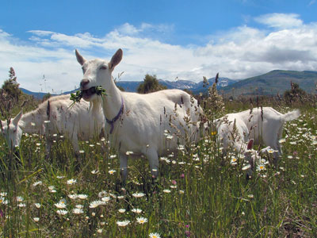
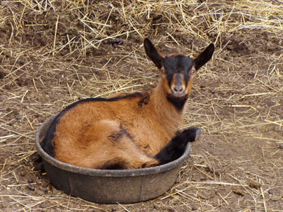
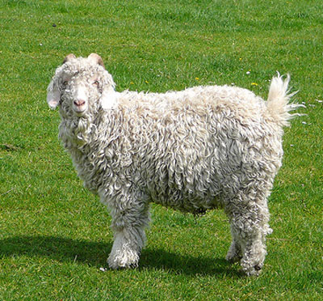
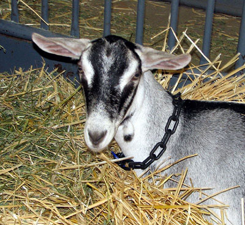
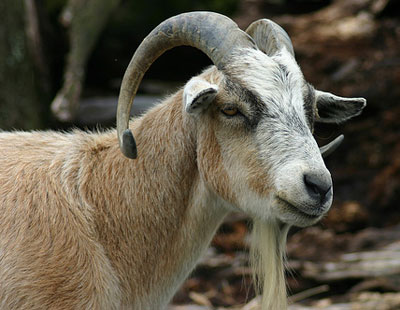

Goats For Milk, Meat And More
Learn about the many goat breeds and their use as dairy, meat, fiber and transport animals.
By the Mother Earth News editors
June/July 1992
Goat breeds fall into one or more of the following categories: dairy, fiber, meat or transport. We've compiled a guide to help you get the most good out of your goat.
Dairy Goats
Handled properly, goat milk is indistinguishable from cow milk. Some people who are sensitive to cow milk find goat milk easier to digest.
Dairy breeds fall into three categories: Swiss, tropical, and miniature. The first two average 1,800 pounds (900 quarts) per year, the latter about a quarter of that.
The Swiss breeds - Alpine, Oberhasli, Saanen, and Toggenburg - are relatively calm animals with upright ears. They do well in cool climates. The tropical breeds - LaMancha and Nubian - are better at handling hot weather. LaManchas (which have tiny ears or none at all) are known for their laid-back personalities. By contrast, floppy-eared Nubians are definitely more energetic ...
The Nigerian Dwarf, a miniature dairy breed, gets along nicely on small lots. It is ideal for anyone who can't use the copious amounts of milk produced by larger goats. Instead of milking with your whole hand, be prepared to milk a Dwarf with two fingers and a thumb.
Dairy goats require a clean area in which to be milked. It may be part of the goat barn or a corner of a garage, mud room, or laundry room. A milkstand raises the does to comfortable milking height (about 12 inches) and holds them in place. Other equipment includes a stainless steel milk pail, a dairy scale to weigh the milk, a strainer with milk filters, and glass storage jars.
For the best-tasting milk, keep your dairy barn and equipment clean, the does healthy, and keep them away from strongtasting forage like cabbage, mint, onion, or garlic. Wipe each doe's udder before milking and spray the teats with teat dip afterwards. At least once a month, monitor udder health with a California Mastitis Test.
For information on breeders, books, sources of supplies, and goat-oriented organizations, consult the Dairy Goat Journal.
Mohair from purebred Angoras is creamy white. Any other color comes from crossbred goats and although generally inferior, is appreciated by hand crafters who prefer natural colors.
Fiber Goats
The soft, fine hair of Angora and cash mere goats is highly prized by hand spinners. Both fibers have lots of "crimp" or waviness, making them easy to spin, even for a beginner.
Angoras are sheared twice a year, like sheep. Their hair, called "mohair," is approximately 6 inches long. A mature commercial grade goat averages 6 ½ to 7 ½ pounds per year. A purebred may produce 12 pounds or more.
Mohair from purebred Angoras is creamy white. Any other color comes from crossbred goats. Although crossbred mohair is generally inferior, it is appreciated by hand crafters who prefer natural colors.
Mohair can be either combed into "top" and spun into worsted yarn for making sweaters and scarves, or carded into "roving" and spun into woolen yarn for coats and rugs.
Cashmere is not a breed but the downy undercoat of some 68 different breeds having origins in cold climates. Good cashmere is at least 1 ½ inches long and comes in a variety of colors, including white. A commercial-grade goat averages pound per year; some animals produce three times that.
Cashmere begins growing after the summer solstice on June 21st, and begins shedding after the winter solstice on December 21st. It is harvested either by combing as fibers shed or by shearing before shedding starts.
Combed cashmere has fewer coarse primary hairs to remove than sheared cashmere. After cashmere has been dehaired (by shaking out coarse hairs and picking out those that remain), it may be either teased or carded for spinning.
For information on breeders, supplies, and other resources consult Angora Goats the Northern Way.
Meat Goats
Goat meat offers a tasty, low-fat, lowcholesterol alternative to beef, pork, or lamb. Called "chevon," it has a unique, pleasant flavor that is comparable to fine venison or grass-fed beef. The meat of young goats, called "chevrette" ("cabrito" in the Southwest) tastes a little like veal.
Meat goats are often called Spanish goats in honor of Spanish explorers who brought these animals to North America as a source of fresh groceries. Surplus or cull Angora and cashmere goats are also used for meat, although a good fiber-producing goat is generally a poor meat goat and vice versa.
Among dairy goats, Nubians are considered a dual-purpose breed. They put on more muscle than other dairy breeds but, as a trade-off, average less milk. The African Pygmy, a miniature meat goat, nearly matches the Nigerian Dwarf in milk output so may also be considered dual purpose.
Excess bucks of any breed may be raised for meat. If kept beyond the milkfed stage, they are usually castrated so they needn't be separated from growing does (for fear of early breeding), and so they will channel energy into muscle growth rather than sexual maturity.
Kids in the 30-pound range are butchered and dressed like rabbits. Goats weighing 80 pounds (or more) are butchered and dressed like deer or lambs, and are divided into similar cuts. The meat of either is very low in fat and should be handled like any other lean meat when cooked or ground into sausage.
Many Mediterranean. Middle Eastern, African, and West Indian cookbooks contain delicious recipes that bring out chevon's intrinsic qualities.
Transport Goats
Because goats are small and easy to handle, and because they do as little environmental damage as indigenous deer, goats are gaining popularity as pack animals among hikers and campers. Goats also make marvelous small-scale draft animals. One goat (or a team) can pull a cart or wagon, till a garden, or snake small logs out of a forest.
A sturdy, large-boned wether will pull a load twice his own weight or pack a load one-third his weight. Does can also be trained for transport, although they can't pull or pack as much as a wether and - if you want milk or kids in the bargain - they need time off for kidding. Bucks are the least desirable choice, since they tend to get cantankerous during the rut.
Although training a goat is not much different from training any other transport animal, at times it requires the patience of Job. After all, goats are by nature capricious and independent creatures.
Kids must be bottle-fed and handled every day to keep them socialized. Once a kid is big enough to wear a collar, daily training sessions are required to teach it to lead, wear a harness or pack saddle, and accept a load of increasing weight.
Patience especially comes in handy, since some of the required training goes against a goat's natural tendencies. A draft goat must be taught to take the lead rather than follow. A pack goat must learn to walk in water (something any sensible goat detests) in case it encounters a stream too wide to jump.
John Mionczynski, founder of Wind River Pack Goats, pioneered the use of pack goats in the United States and has become a source of saddles and supplies. He has a fascinating how-to manual, The Pack Goat. Hoegger Supply Company carries carts, wagons, harnesses, and other goat-keeping supplies.
|
 PHOTO: NATIONAL SAANEN BREEDERS ASSOCIATION A dairy breed, Saanens are relatively calm and do well in cool climates. |
 OBERHASLI BREEDERS OF AMERICA Oberhaslis, like this kid, are a Swiss dairy breed. |
 FLICKR/TIM GREEN AKA ATOACH Angoras are considered a fiber breed. Their soft, fine hair is highly prized by hand spinners. |
|
 FLICKR/JUST CHAOS Alpines are a dairy breed, and can also make great pack goats. |
 FLICKR/RYAN SOMMA The African Pygmy makes an excellent milk or meat goat. |
 FLICKR/JUST CHAOS Nubians are an energetic dairy or meat breed, with floppy ears and a tolerance for hot weather. |